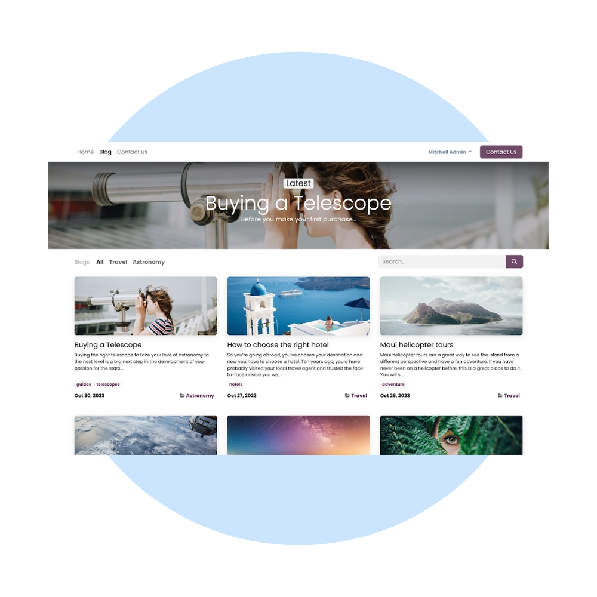
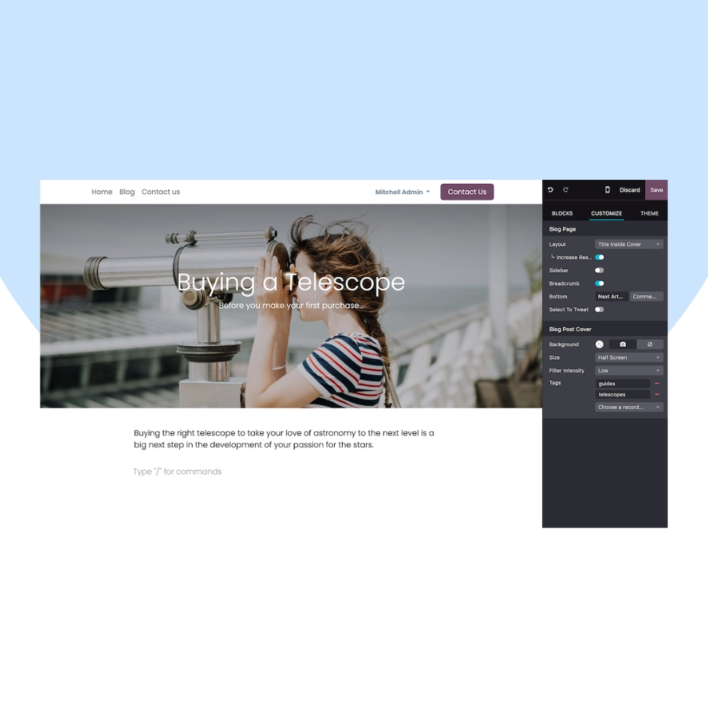
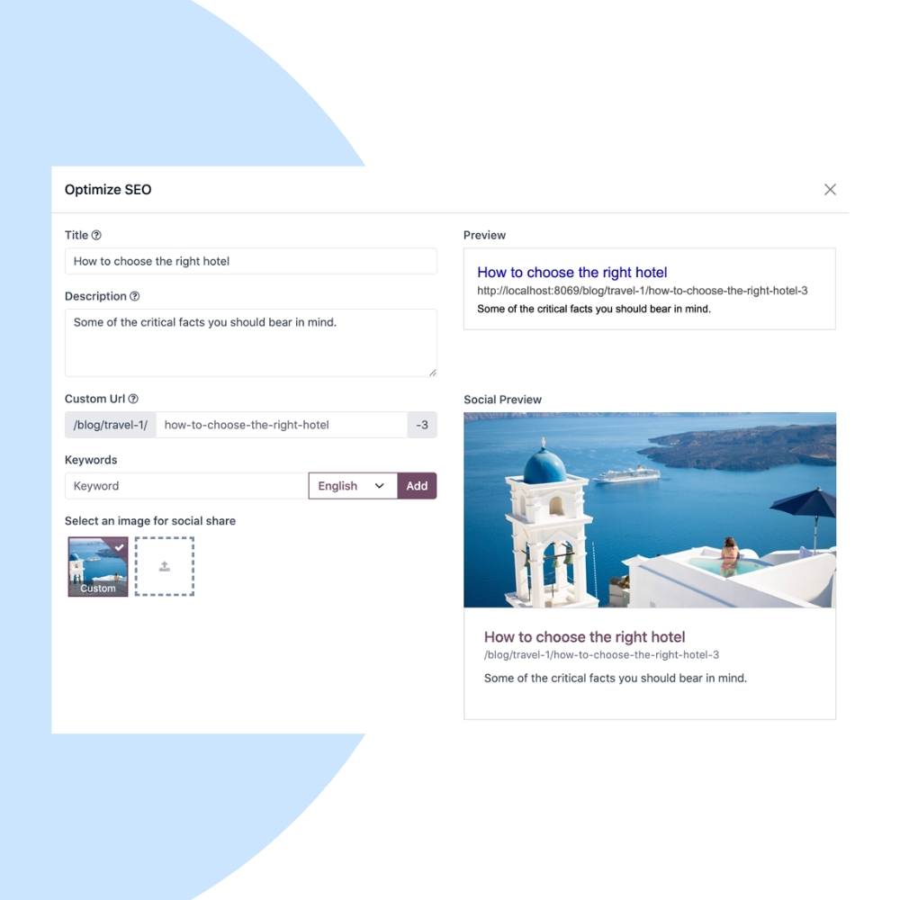

Publish engaging content and grow organic traffic with Odoo Blog. We help businesses create, manage, and optimize blogs that drive SEO rankings, brand authority, and qualified leads.
We configure Odoo Blog to match your content strategy, branding, and SEO goals. Integrate blogs seamlessly with Website, CRM, Email Marketing, and Lead Forms.


Our implementation ensures your blog is easy to manage, optimized for search engines, and designed to convert readers into leads.
Built-in tools to improve search rankings.
Write and publish posts with a simple editor.
Organize content for better discoverability.
Turn readers into leads with CTAs and forms.
Boost reach with built-in social sharing options.
Connect blog readers directly to CRM pipelines.
We help you continuously improve blog performance, SEO rankings, and lead generation through ongoing optimization and analytics.
